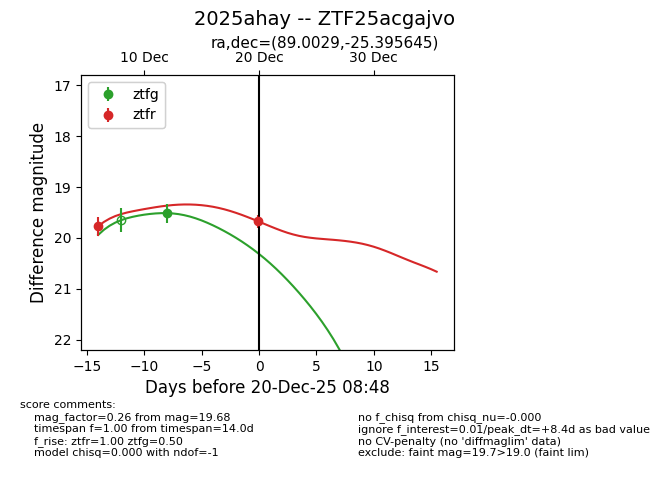
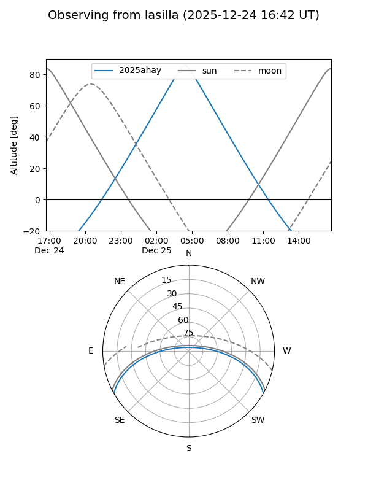
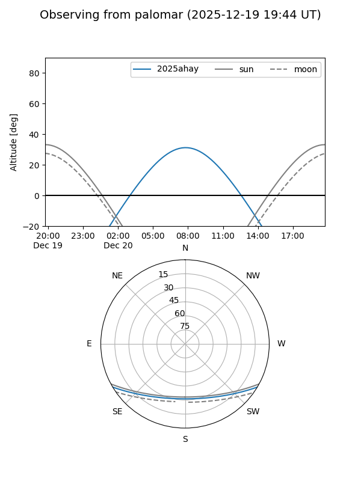
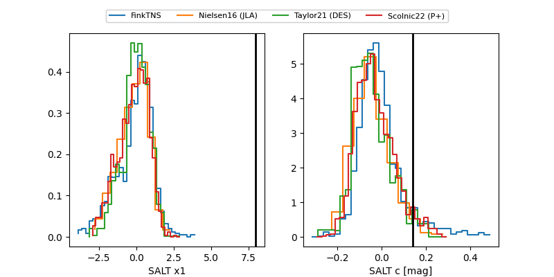

2025ahay
Target 2025ahay at 2025-12-21 08:23
Aliases and brokers:
FINK: fink-portal.org/ZTF25acgajvo
Lasair: lasair-ztf.lsst.ac.uk/objects/ZTF25acgajvo
ALeRCE: alerce.online/object/ZTF25acgajvo
TNS: wis-tns.org/object/2025ahay
YSE: ziggy.ucolick.org/yse/transient_detail/2025ahay
alt names
ZTF25acgajvo (ztf,fink_ztf)
2025ahay (tns,yse)
Coordinates:
equatorial (ra, dec) = 89.0029,-25.39565
equatorial (HMS+DMS) = 05:56:00.71,-25:23:44.32
galactic (l, b) = (230.8169,-22.83658)
Flags:
Photometry:
last ztfg=19.80, ztfr=19.77
2 ztfg, 3 ztfr detections
Lightcurve

Visibility


Additional plots
